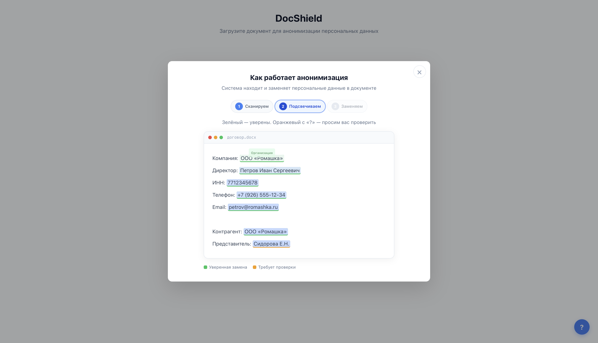
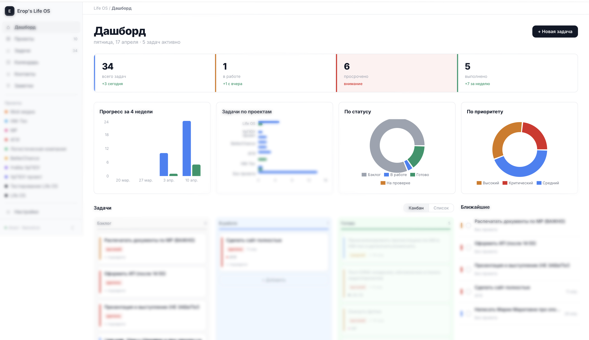

Юркомпания два года искала решение и не нашла. Я собрал его за неделю. Вот как.
Начать читатьКрупная юридическая фирма в Москве. Я приехал туда вести обучение. В перерыве ко мне подошёл руководитель и задал вопрос, который я слышу от каждой компании последние два года.
Они хотят работать с ИИ. Составлять документы. Анализировать судебную практику. Сравнивать договоры. Проверять контрагентов. Но не могут.
Причина — данные. У юриста в работе имена клиентов, суммы, внутренние заметки, реквизиты, банковские выписки. Взять это и отправить в ChatGPT — запрещено. За такую утечку фирму закроют.
Единственный путь — обезличить. Заменить имена, суммы, реквизиты на заглушки, а после ответа ИИ вернуть всё обратно.
Звучит легко. На практике — невозможно.
История у всех одна: идут к разработчикам — те не берутся. Задача узкая, заказчик один, коробочного продукта нет. С нуля — сотни тысяч и месяцы работы.
И фирмы опускают руки. Работают как раньше: дольше, дороже, без ИИ.
«Сколько вы с этим бьётесь?» — спрашиваю я.
Два года. С тех пор как ChatGPT вышел для всех. Страна говорит про ИИ — они не могут. Не потому что глупые. Потому что инструмента нет.
А теперь — месяц назад.
Я сажусь вечером. За неделю собираю этот инструмент. С нуля. Без строчки кода, которую я бы понимал.
Работает на их собственном сервере. Ни одна цифра наружу не уходит. Данные остаются у них. Юристы работают с ИИ — без нарушений.

Через неделю я отправляю руководителю ссылку. Он открывает, проверяет всё внутри. Пишет мне одно сообщение:
Это был момент, когда у меня что-то переключилось в голове. Я понял: тот рубеж, о котором все говорят последние два года — пройден. Не «скоро будет», не «через пять лет», не «когда-нибудь». Уже.
То, что делал отдел за полгода и сотни тысяч — делает один человек за неделю. Без кода, без команды. С агентом.
Скажешь: «Повезло. Один раз получилось».
Смотри дальше.
За два года ИИ прошёл три этапа. Пропустил — смотри.
Это и есть самое важное, что произошло за последний год. Работа с искусственным интеллектом перестала быть «подсказал — я сам сделал». Теперь она — «поставил задачу — получил готовый результат».
Именно это случилось полгода назад. И именно поэтому история с юридической фирмой — не совпадение. Это новая норма.
Если ты всё ещё не чувствуешь разницу — смотри.
Справедливо. Смотри вторую историю. Без клиента.
Я в ИИ каждый день — работа такая. Десятки Telegram-каналов, сотни статей, новые модели — всё в ежедневном потоке. В какой-то момент я понял: я не читаю. Скольжу глазами по заголовкам и ничего не запоминаю.
Сел с агентом и говорю: «Мне нужно одно место, куда всё собирается и откуда я беру только важное. Сделаем?»
«Сделаем. Какие источники?»
За один вечер — рабочий парсер. Ходит по всем блогам и сайтам, которые мне нужны, складывает материалы в базу.
Через пару часов добавили Telegram — парсер стал читать ещё и мои каналы.
К концу следующего дня поверх всего этого заработал фильтр: агент сам решает, какие новости стоят внимания, какие можно проскроллить, а какие — шум.
Ещё через день он начал писать черновики постов из того, что отобрал.
Я не написал ни одной строчки кода. Не знаю, как работает Telegram API. Не представляю, как вызывается LLM из скрипта. Всё, что у меня есть — это задача и агент.
Остальное — его работа.
Раньше такое мог позволить себе только программист. Или тот, кто его нанял за триста тысяч. Теперь — любой, у кого есть полчаса времени.
У меня есть давняя боль. Я никогда не умел вести заметки.
Пробовал всё. Notion, Obsidian, Todoist, Apple Notes, дневники, Bullet Journal, десятки приложений «для осознанной жизни». Сдаюсь через неделю. Высокий порог входа: надо что-то настроить, куда-то что-то вписать, вспомнить тег, выбрать папку. Не моё.
Но мне было надо. Проекты множатся, мысли теряются, люди забываются, встречи провисают, идеи уходят в воздух. В голове это всё не помещается — нужна внешняя память. Второй мозг.
И я подумал: а почему мой второй мозг должен быть чужой программой? Пусть он будет моим. Заточенным под то, как я думаю. Под мои проекты, мои процессы, мои форматы.
Я сел с агентом и сказал: «Сделай мне систему. Проекты. Задачи. Мысли. Люди. Встречи. Я не буду кликать и выбирать. Я буду надиктовывать голосом, а ты раскладывай сам.»
За два с половиной дня он собрал мне приложение.
Работает. Надиктовываю голосом из любого места — он кладёт мысль в правильный проект. Говорю «напомни через неделю» — напомнит. Спрашиваю «что я думал про клиента Х три месяца назад» — достаёт.
И здесь — самое крутое.
Внутри приложения работает агент. Не LLM-запрос — агент, который сам решает, что делать с каждой заметкой. Ранжирует, связывает, достаёт, строит контекст.
То есть я с помощью агента собрал себе агента.

Это моя рабочая среда. Прямо сейчас. Полгода назад собрать её в одиночку было бы тем ещё испытанием. Год назад — задачей для долгой разработки на полгода.
И в какой-то момент, надиктовывая очередную мысль в свою систему, я поймал странное ощущение.
Что-то изменилось. Не в инструментах. Не в агентах.
Во мне.
Раньше передо мной ставили задачу — и первая мысль была «успею / не успею», «хватит скилла / не хватит», «возьмусь / откажусь». Теперь первой мысли нет. Есть только «ок, давай разберёмся». Потому что я знаю: что бы ни понадобилось — способ с агентом найдётся.
Это не потому, что я стал гением. Это потому, что у меня появился второй я.
Та эпоха, когда ты работал как лошадь. Когда ты умирал на работе, которую разлюбил. Когда ты по выходным доделывал отчёты и потом не мог уснуть. Когда ты в понедельник утром вставал с мыслью «опять».
Это закончилось.
Не потому что рутина исчезла. Рутина никуда не ушла — её всегда будет много. А потому что у тебя теперь есть тот, кто рутину делает вместо тебя.
Ты любишь то, что делаешь — делай это. Схемы, гипотезы, архитектуру, клиентов. А рутину — отчёты, сводки, парсинг, договоры по шаблону — забирает агент.
Ты не станешь ленивым. Ты займёшься тем, ради чего пошёл в это дело. Потому что наконец-то начнёшь делать только то, что делаешь лучше всего.
В марте 2025-го независимая лаборатория METR — те, кто меряет способности моделей — опубликовала график.
Они измерили, сколько времени ИИ делает задачу сам — и как эта длительность растёт от поколения к поколению.
Получилось так:
Агент уже сейчас делает задачу 4–6 часов сам. С вероятностью 80%.
Если готов на риск 50/50 — задачу на 12 часов.
Это не прогноз. Это замеры.
И главное — длительность удваивается каждые семь месяцев. Причём сам период удвоения — продолжает сокращаться.
Посчитай, где он будет через год. Если удвоение продолжится — это рабочие дни. Через два года — рабочие недели. Через три — месяцы.
Мы почти там.
Тогда было окно. Люди, которые в 98-м вложили вечер в изучение HTML, через пять лет делали сайты для Coca-Cola. Остальные — не делали.
Агенты сегодня — это тот же момент. Но с одной разницей.
HTML в 98-м был узкой нишей — для технарей, которые умели писать код. Агент в 2026-м — инструмент для любого: маркетолога, юриста, продакта, врача, учителя. Чтобы им управлять, не надо учить язык — надо уметь ставить задачу словами.
Технология зрелая. Инструменты доступны. Порог входа — лежит под ногами. А большинство ещё даже не поняли, что вообще происходит.
Это и есть твой рынок. Пока он не закрылся.
У каждого есть задачи, на которых теряешь больше всего времени. Вот что можно поручить агенту уже сейчас — по профессиям.
Если дочитал досюда и думаешь «открою Claude — и всё получится», — хочу, чтобы ты заходил в это с правильными ожиданиями.
Первый раз — ты не поймёшь, что происходит. Агент услышит не так. Ты скажешь — сделает не то. Попытаешься починить — сломает то, что работало. Психанёшь и закроешь.
Так у всех. Это нормально.
У меня получается потому, что я знаю, где агент врёт, где тупит, в каких задачах его нельзя оставлять одного. Это не написано в документации. Это приходит только через ошибки.
У тебя её пока нет — и не могло быть. Она набирается только на своих ошибках. Это нормально.
Порог входа есть. Первые недели — ошибки, злость, мысль «я не понимаю, что происходит». Это проходит у всех.
Но этот порог в десять раз ниже, чем был два года назад. И ниже, чем у любой технологии последних двадцати лет.
Раньше, чтобы войти в ИИ, нужно было учить Python, математику, ML, разбираться в архитектурах. Сейчас нужно другое — правильно ставить задачу словами.
Это не «не нужно учиться». Это «учиться надо другому».
И поэтому я собрал практикум. Чтобы сократить тебе этот месяц-два битвы до семи вечеров.
Внутри практикума ты соберёшь свой проект — не учебный «Hello world», а то, что уже решает твою задачу.
К концу практикума ты:
Сотрудник, закрывающий половину твоих задач и ускоряющий остальное в пять раз, стоит 500К–1М в месяц. Не болеет, не выгорает, не увольняется.
Агент — около 10 тысяч рублей в месяц. Цена одного обеда в ресторане.
Практикум — разовый платёж, чтобы этим агентом уметь управлять.